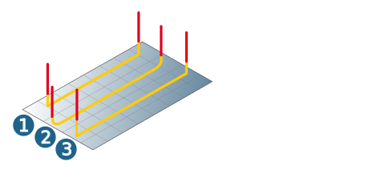

Macros
Approach macro / Retract macro
The following tool movements are available as approach and retract macros:
Vertical (1), Circular (2), (3) Tangential (3).
|  |
The Ramp option is also possible for the approach macro. Ramp height (1), Ramp angle (2), Ramp length (3). The Ramp increment (4) is calculated automatically from these parameters. Approach and retract macros are only executed if they do not result in a collision.
 |
Return macro
If Return macro is enabled, horizontal stepover is executed between the milling paths via the clearance plane or clearance distance. The activated approach or retract macro is executed for each retract or infeed movement.
Macros normal to surfaces: The approach and retract macros are executed in the direction of the surface normals.
Advanced infeed strategy
Retract: Defines the standard behavior. The tool is retracted in steep areas to avoid collisions.
Trim: Shortens the milling path in steep areas.
Modify macro: The macro is adapted to the model so that collisions are avoided.
Feedrate macros
The feedrate may be defined for both Approach and Retract.